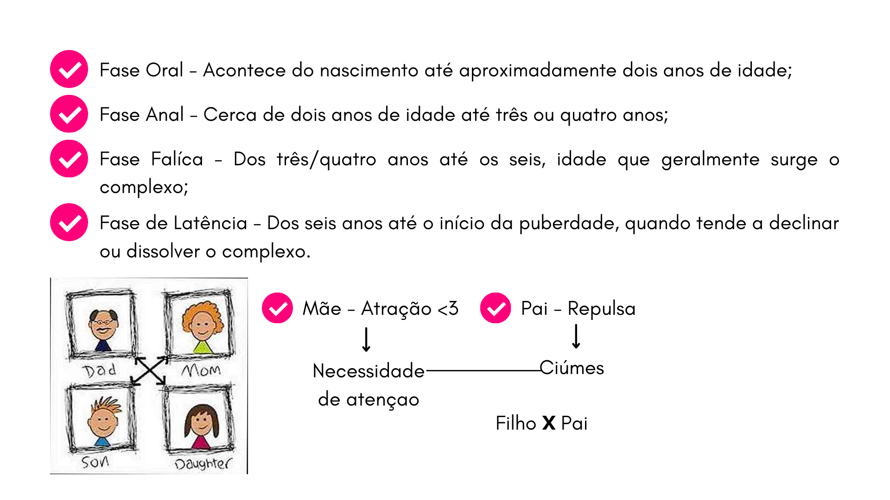

É um método de investigação da mente humana e dos seus processos, que eleva a mente para além das suas relações biológicas e fisiológicas. Ao longo dos estudos, Freud elaborou uma teoria psicanalítica que formou as bases para uma nova ciência, dotada de métodos para a investigação da mente humana. A psicánalise traz a ideia do inconsciente como a parte mais significativa dos processos mentais e influência todo o modo de viver das pessoas.
